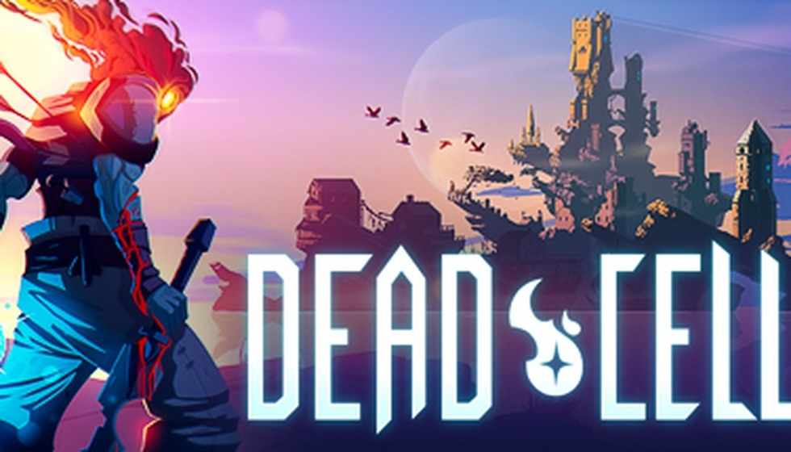

都上Switch 2了，这款恶魔城新作为何还要“倒
最近后台被问爆了的话题，除了《丝之歌》到底还出不出的老生常谈，就是科乐美这手反向移植的迷惑操作。新游戏不优先给新机器站台，反倒回头去适配快被淘汰的初代Switch，这操作直接把我看懵了。社区里大伙儿吵翻了天，有人说是“反向独占”的另类营销，有人直接吐槽是不是对优化没信心，只敢拿老硬件试水。要搞懂这波操作是昏招还是妙手，得先看看操刀这家工作室什么来头。

别急着喷科乐美，这次开发交给的是Evil Empire，一手把《死亡细胞》送上神坛的那个幕后团队。国内玩家对《死亡细胞》那套行云流水的手感太熟悉了，键鼠跟手、掌机也不拖泥带水，技术底子确实硬。但话说回来，法国团队做巴黎故事，这波文化Buff咱们国内玩家真买账吗？咱们嘴上说着原味儿最好，可《死亡细胞》那种高速爽快感跟《恶魔城》祖传的老派硬核压根儿两码事，国内社区天天为“IGA城”跟老ACT吵得不可开交，到了这款新作上，手感天平往哪边歪，直接决定口碑会不会翻车。背景够硬是好事，但摊上科乐美这位“老东家”，事情就没那么简单了。
游戏把时间拨回1499年的巴黎，这次扛鞭子的不再是西蒙或者阿鲁卡多这些熟面孔，换成了贝尔蒙特家的新人罗斯。特雷弗·贝尔蒙特会在中途露个脸，死神和卡米拉这俩老熟人也会作为Boss登场，情怀配料算是给你拉满了。可1499年巴黎加原创主角这套组合拳，国内恶魔城老粉认不认？咱们这群从GBA、NDS时代摸爬滚打过来的老猎人，对月下那套哥特味儿早就刻进DNA了，突然换个法国历史背景，心里难免犯嘀咕。原创主角想撑起场面，没点真本事那就是纯蹭IP热度，缺乏情怀加持的风险Evil Empire真扛得住吗？设定再花哨，落回手感和玩法上才是硬道理，毕竟这年头“回归经典”四个字已经被用烂了。
玩法这块倒是走回了老路子，主打2D动作探索加“吸血鬼杀手”鞭子系统，平台跳跃、地图探索和鞭子抽人的反馈是核心体验。听着挺美，但一想到这玩意儿要跑在初代Switch那块老芯片上，我心里就直打鼓。掌机模式要是能稳720P 60帧，那算科乐美积德，要是稍微复杂点的场景就掉帧卡成PPT，那“回归经典”这四个字直接变笑话。咱们手残党本身就靠肌肉记忆硬撑，输入延迟但凡多一点，那祖传鞭子甩起来怕不是比上班还难受。聊完这些花活，咱们得算算最现实的账：在初代Switch上跑这玩意儿，到底会不会卡成PPT？
官方定档10月15日发售，数字版预购还得再等等，全平台覆盖XSX/S、PS5、PC和Switch 2，但最扎眼的还是初代Switch那个名字。我琢磨着，这波反向移植到底是科乐美清库存的妥协，还是给仍守在老机器上的核心玩家最后的体面？国内二手Switch市场保有量巨大，很多人换机周期慢，新作如果能照顾到这批用户，声量上肯定有加成，但代价就是画面和帧数被旧硬件绑死。但凡优化拉胯，那就不叫情怀，叫背刺老用户。说来说去，游戏终究是要拿手柄玩的，咱们还是得把目光收回到最本质的问题上。
所以啊，别管什么初代二代，游戏好玩才是硬道理。希望Evil Empire别砸了自己的招牌，也别辜负了贝尔蒙特这个百年老字号。各位老猎人，你们是会选择在掌机上再信一次科乐美，还是直接Steam见？你的选择。
关于我们
📱 公众号名称：三天游戏
✍️ 作者：曾三天
扫码关注公众号，获取每日最新资讯

商务合作与版权
商务合作 / 内容投稿 / 品牌推广
请关注公众号「三天游戏」后台留言联系
版权声明：本文由作者整理，转载需注明出处。